1
Kapak
Kapak
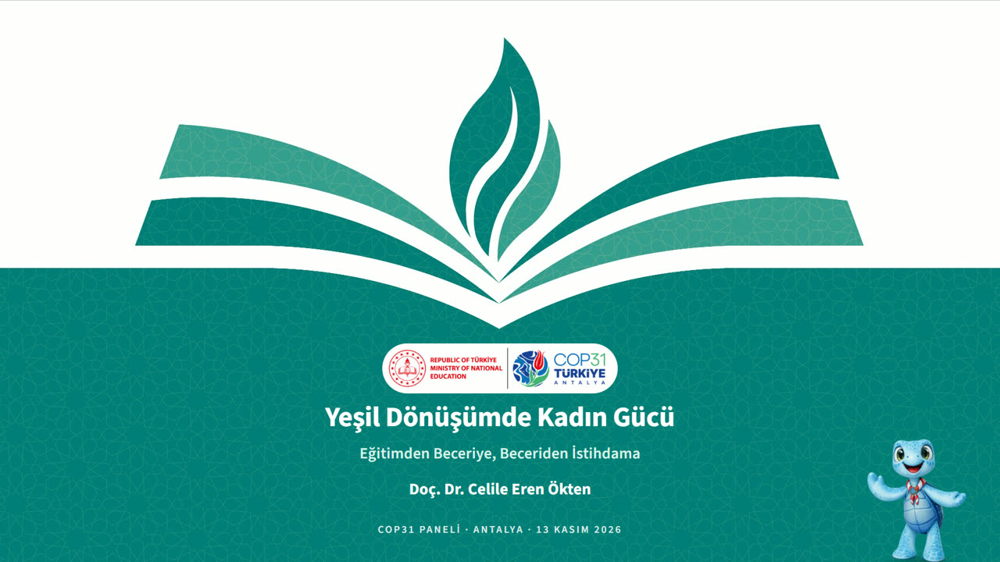
Kaynak: Taslak 1. sayfa. Başlık ve alt başlık taslaktaki gibi; tarih satırı eklendi: “COP31 Paneli · Antalya · 13 Kasım 2026”.
Bu slayt için kararınız
Konuşma metni (v3) ve içindeki 14 taslak sayfa, COP31 sunum şablonuna taşındı. Sunumun canlı hâli: tarayıcıda izleyin (ok tuşları ya da dokunma ile ilerler).

Kaynak: Taslak 1. sayfa. Başlık ve alt başlık taslaktaki gibi; tarih satırı eklendi: “COP31 Paneli · Antalya · 13 Kasım 2026”.
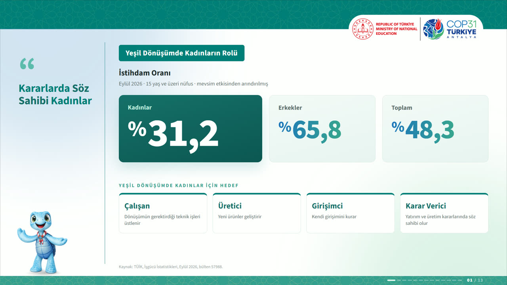
Sol sütun mottosu (öneri): “Kararlarda Söz Sahibi Kadınlar”
Kaynak: Taslak 2. sayfa + konuşma 3.–4. paragraf. TÜİK Eylül 2026 oranları; dört rolün altındaki kısa açıklamalar konuşmadan alındı (“teknik işleri üstlenmeli, yeni ürünler geliştirmeli, kendi girişimlerini kurabilmeli, kararlarda söz sahibi olmalı”).
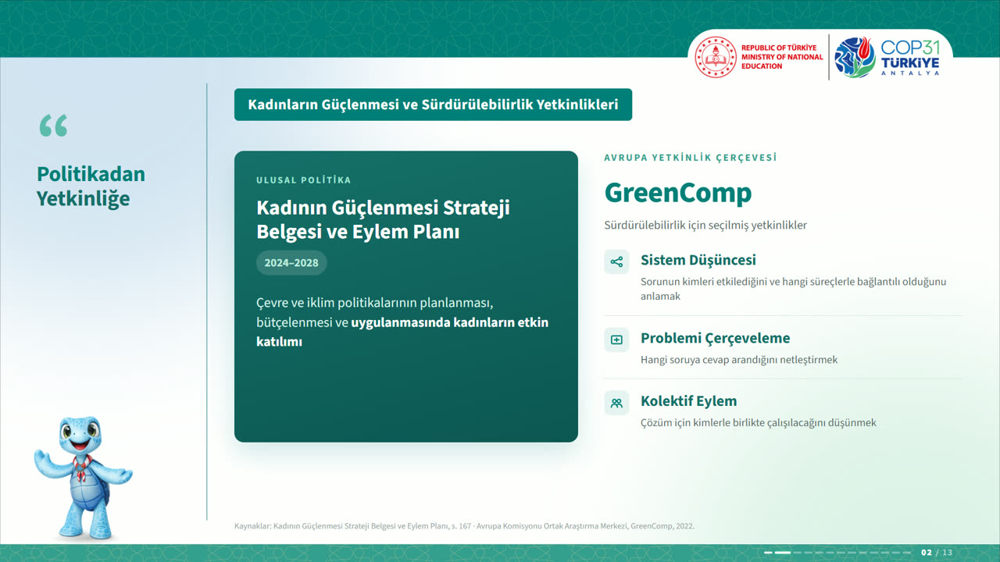
Sol sütun mottosu (öneri): “Politikadan Yetkinliğe”
Kaynak: Taslak 3. sayfa + konuşma 6.–7. paragraf. Üç GreenComp yetkinliğinin altındaki açıklamalar konuşmadan. Strateji belgesi yılı (2024–2028) taslaktan.
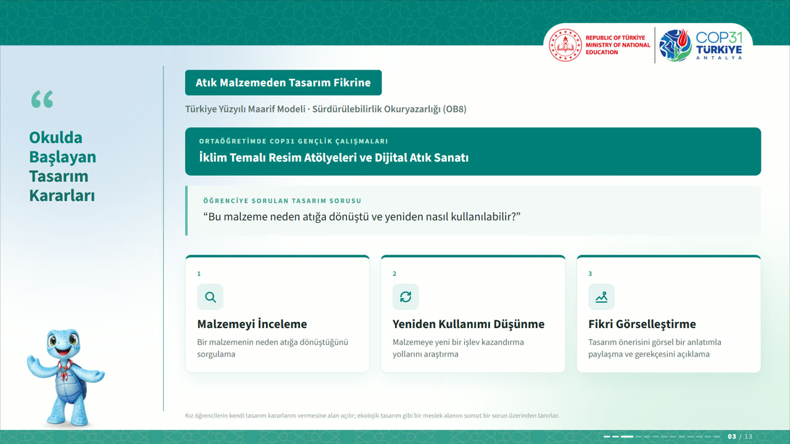
Sol sütun mottosu (öneri): “Okulda Başlayan Tasarım Kararları”
Kaynak: Taslak 4. sayfa + konuşma 9.–11. paragraf. Konuşmadaki öğrenci sorusu (“Bu malzeme neden atığa dönüştü…”) alıntı kutusu olarak eklendi.
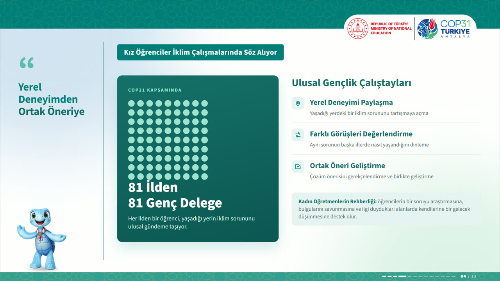
Sol sütun mottosu (öneri): “Yerel Deneyimden Ortak Öneriye”
Kaynak: Taslak 5. sayfa + konuşma 12.–14. paragraf. Taslaktaki Türkiye haritası silüeti yerine 81 nokta kullanıldı (harita gösteriminde resmî sınır/Kıbrıs kuralları; istenirse resmî harita konur). Kadın öğretmenlerin rehberliği kutusu konuşmadan.
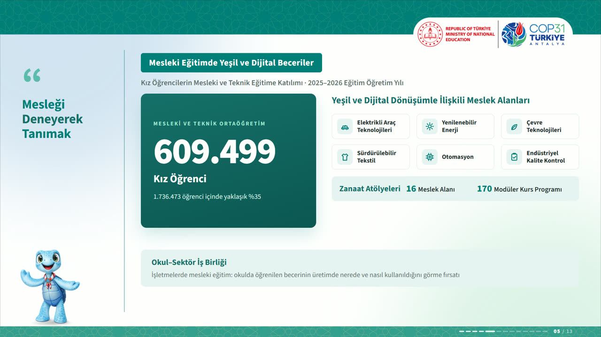
Sol sütun mottosu (öneri): “Mesleği Deneyerek Tanımak”
Kaynak: Taslak 6. sayfa + konuşma 17.–19. paragraf. Altı meslek alanı ikonlu kartlarda; Zanaat Atölyeleri satırı ve okul–sektör iş birliği bandı taslaktaki gibi.
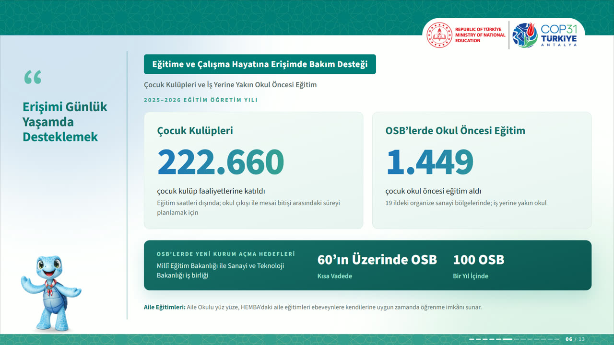
Sol sütun mottosu (öneri): “Erişimi Günlük Yaşamda Desteklemek”
Kaynak: Taslak 7. sayfa + konuşma 21.–24. paragraf. En alttaki “Aile eğitimleri” satırı (Aile Okulu, HEMBA) konuşmadan eklendi; taslakta yoktu.
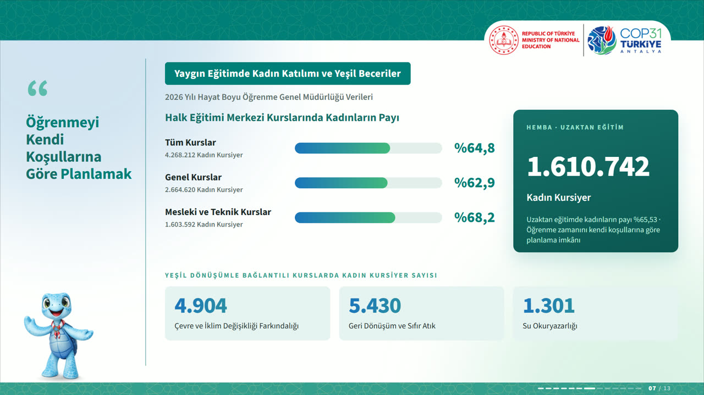
Sol sütun mottosu (öneri): “Öğrenmeyi Kendi Koşullarına Göre Planlamak”
Kaynak: Taslak 8. sayfa + konuşma 25.–27. paragraf. “Genel kurslar” satırı (2.664.620 · %62,9) ve HEMBA’da kadın payı (%65,53) yalnız taslakta var, konuşmada geçmiyor — teyit edilmeli.
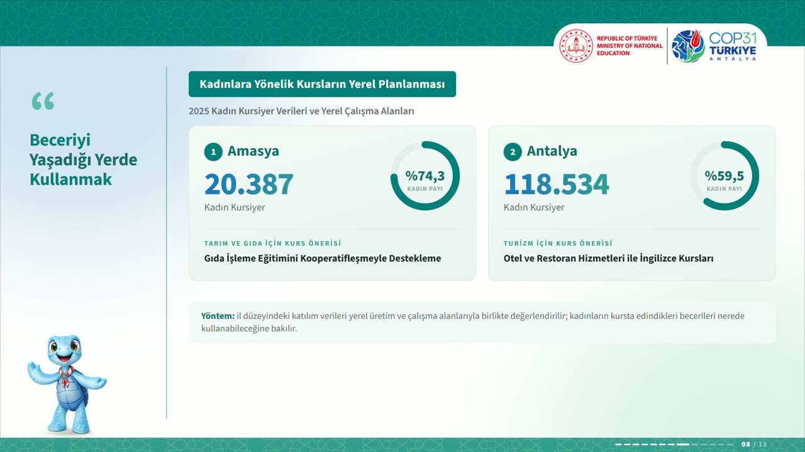
Sol sütun mottosu (öneri): “Beceriyi Yaşadığı Yerde Kullanmak”
Kaynak: Taslak 9. sayfa + konuşma 28.–30. paragraf. Taslaktaki harita yerine iki il kartı ve kadın payı halkası. “Yöntem” kutusu konuşmanın 28. paragrafından.
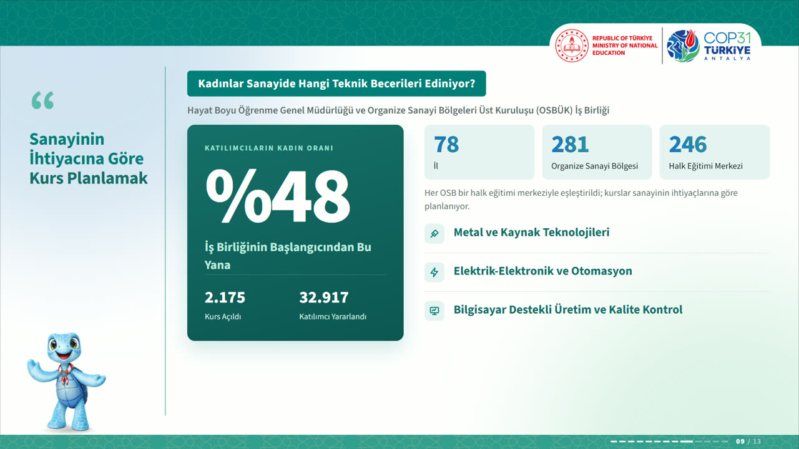
Sol sütun mottosu (öneri): “Sanayinin İhtiyacına Göre Kurs Planlamak”
Kaynak: Taslak 10. sayfa + konuşma 32.–34. paragraf. Rakamlar aynen; “Her OSB bir halk eğitimi merkeziyle eşleştirildi” cümlesi konuşmadan.
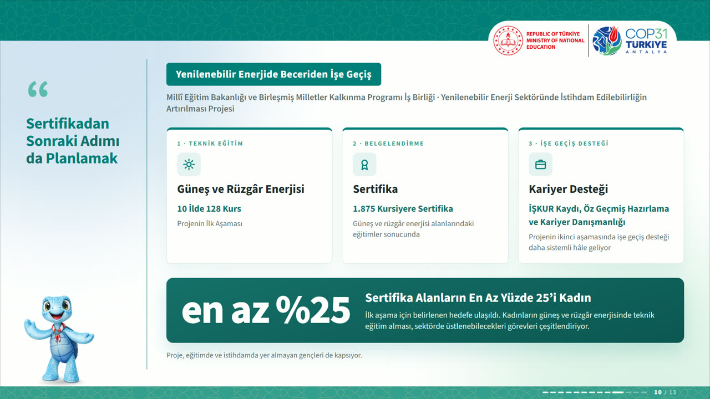
Sol sütun mottosu (öneri): “Sertifikadan Sonraki Adımı da Planlamak”
Kaynak: Taslak 11. sayfa + konuşma 35.–37. paragraf. Üç aşama kartı; “en az %25 kadın” bandı; proje adı alt başlıkta; NEET gençler satırı konuşmadan.
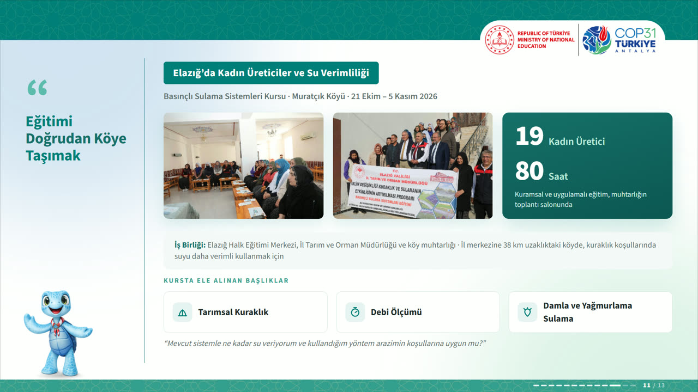
Sol sütun mottosu (öneri): “Eğitimi Doğrudan Köye Taşımak”
Kaynak: Taslak 12. sayfa + konuşma 38.–41. paragraf. İki fotoğraf taslak görselinden kırpıldı (düşük çözünürlük) — orijinal fotoğraflar gönderilirse değiştirilir. İş birliği, 38 km ve üretici sorusu konuşmadan.
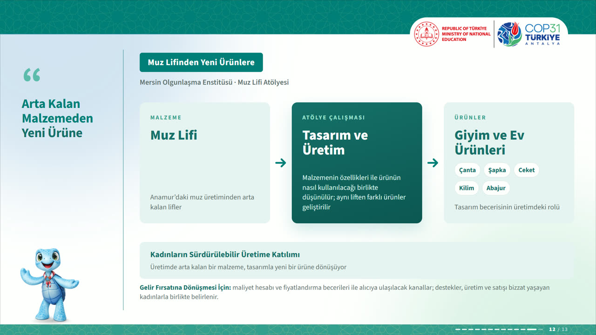
Sol sütun mottosu (öneri): “Arta Kalan Malzemeden Yeni Ürüne”
Kaynak: Taslak 13. sayfa + konuşma 43.–44. paragraf. Üç kutu ve oklar taslaktaki gibi; “Gelir fırsatına dönüşmesi için” satırı konuşmanın 44. paragrafından.
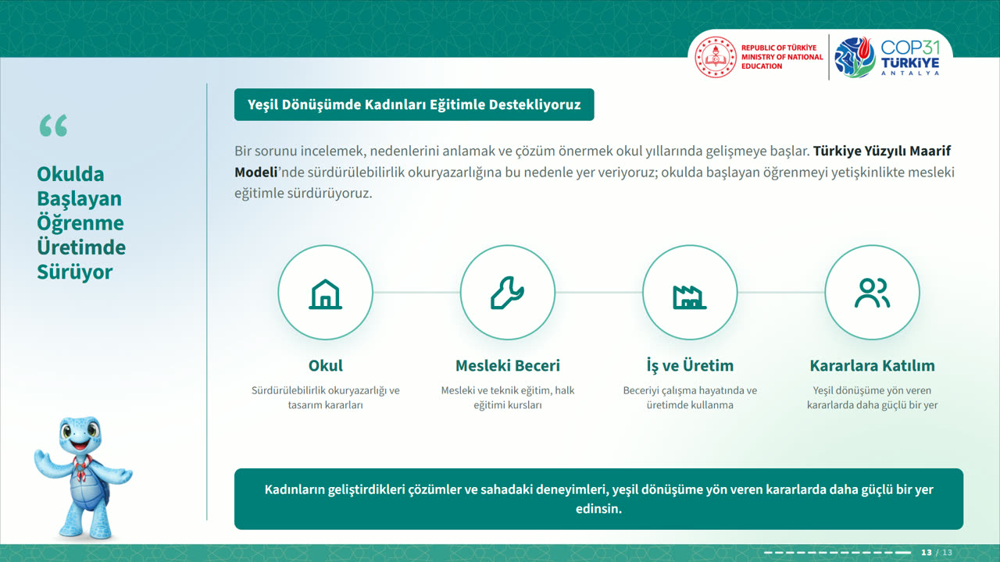
Sol sütun mottosu (öneri): “Okulda Başlayan Öğrenme Üretimde Sürüyor”
Kaynak: Taslak 14. sayfa + konuşma 45.–47. paragraf. Taslağın kapanış sayfası ikiye ayrıldı: dört halkalı zincir bu slaytta, “Teşekkür ederim” ayrı kapak slaytında.
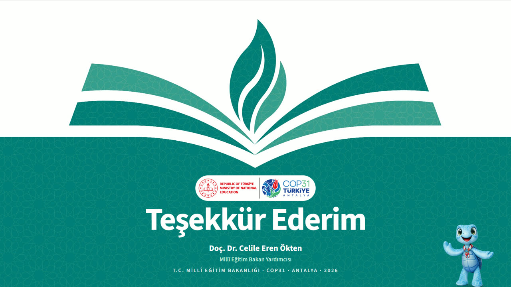
Kaynak: Şablonun kapanış kapağı: “Teşekkür Ederim” ve kurum satırı.
Sunumun tamamı için kararınız ve listede olmayan ek istekler.
Her slayt için “Onaylıyorum” ya da “Düzeltme istiyorum” seçin, gerekiyorsa not yazın. En alttaki çubuğa adınızı yazıp “Kaydet”e basın. Revizeleri kaydettiğinizi bildirmeniz yeterli.
Lütfen bekleyin.